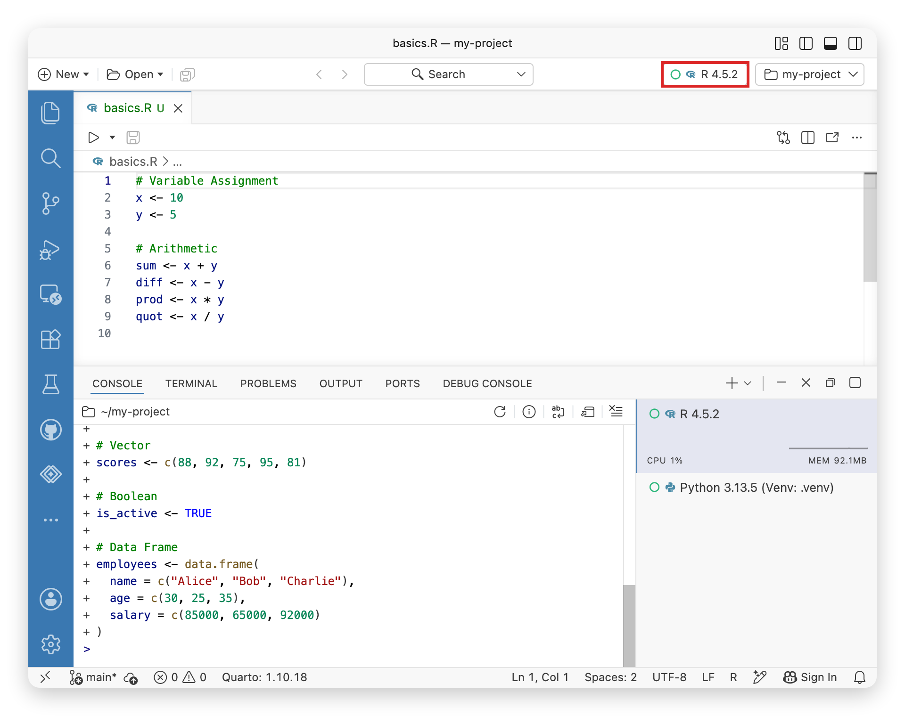

H Positron 与 AI 辅助的 R 科研项目全流程
本附录是新增的实践拓展，不属于原教材附录。你将完成一条可检查的链路：安装 R 与 Positron → 连接 Posit Assistant → 用提示词开发项目 → 分析数据 → 保存图片和结果 → 生成 LaTeX 表格 → 封装 R 包 → 编写工作说明 → 在论文模板中引用结果 → 从干净会话重跑。
贯穿案例使用 R 自带的 mtcars 数据，回答“在控制发动机马力后，汽车重量与每加仑行驶里程有什么统计关联”。数据规模小、无需下载，也不涉及个人信息，适合把注意力放在工作流程上。本例用于软件流程教学，不能据此作因果解释或当作新研究发现。
H.1 先明确最终交付物
操作软件之前，先定义“完成”：另一个人在新 R 会话中，依据 README 运行入口脚本，能够重新得到相同的数值结果、图形、表格和论文输入文件。
| 阶段 | 要回答的问题 | 可检查的产物 |
|---|---|---|
| 环境 | R 是否真的能执行？ | 版本、解释器路径、最小绘图 |
| AI | 连接是否可用，回答是否正确？ | 无敏感数据的测试问答与本地验证 |
| 项目 | 文件各放哪里？ | 入口脚本、数据目录、函数目录 |
| 分析 | 计算了什么，结果可靠吗？ | 模型对象、系数表、诊断图 |
| 软件 | 方法能否重复调用？ | R 包源码、帮助页、测试 |
| 写作 | 文字和图表是否来自同一结果？ | 工作报告、表格与结果片段、论文 |
| 复现 | 从零开始是否仍能成功？ | 重跑记录、环境信息、检查结论 |
附带项目位于课程目录的 examples/positron-workflow/。先把这个文件夹作为一个独立项目在 Positron 中打开。正文中的项目相对路径均以它为根目录；不要在 Bookdown 源目录里逐段创建示例文件。安装、联网和改写文件的教学代码不随讲义编译自动执行。
H.2 安装 Positron 与 R
H.2.1 先分清 R、IDE 和 AI
目的。 知道出错时该检查哪一层。R 负责执行计算，Positron 是编辑和运行代码的集成开发环境，Posit Assistant 是其中调用语言模型的辅助功能。安装 IDE 不等于已经安装 R；AI 给出代码也不等于代码已经成功运行。
操作。 先访问 CRAN 安装适合系统的 R（官方当前要求 R 4.2 或更高），再从 Positron 官方下载页 获取安装程序。macOS 要区分 Apple silicon（arm64）和 Intel（x86_64）；在“关于本机”检查芯片类型，再选择对应安装包。按安装器提示安装，首次启动按系统的正常安全提示操作。Windows 使用对应的 R 安装程序和 Positron 安装程序，安装后重新启动 Positron，让它重新扫描解释器。
检查。 打开 Positron 后，能进入工作台并选择 R 会话才算完成了安装环节。此时不需要先创建 API Key。
常见问题。 找不到 R 时先确认 R 已独立安装，再检查 Positron 的解释器选择；更换 R 版本后重启 IDE。不要把“Terminal 中找不到 R 命令”和“IDE 未发现 R”当作同一个问题，前者还可能是 PATH 设置问题。编译含 C/C++ 的 R 包才涉及额外系统工具：macOS 通常用 Xcode Command Line Tools，Windows 使用与 R 版本匹配的 Rtools；本附录的最小包只含 R 代码。
H.2.2 认识工作台：代码在哪里运行，结果在哪里看
目的。 建立“编辑 → 执行 → 查看对象 → 保存结果”的循环。界面布局可以拖动，学习时按面板名称寻找功能，不依赖截图中的固定位置。
| 面板或入口 | 你在这里做什么 | 本节检查 |
|---|---|---|
| Explorer | 浏览当前打开的项目文件夹 | 能找到 run.R |
| Editor | 编辑脚本，保留可重跑代码 | 保存一个 .R 文件 |
| Console / R Session | 执行 R 表达式 | 1 + 1 返回 2 |
| Variables / Data Explorer | 查看对象与数据表 | 出现数据框 cars |
| Plots | 查看绘图结果 | 出现散点图 |
| Help | 阅读 R 帮助 | 显示 lm 文档 |
| Terminal | 执行系统命令 | 区分 shell 与 R 提示符 |
| Command Palette | 搜索命令 | 能搜索解释器或模型配置命令 |

Figure H.1: Positron 官方工作台截图，2026-09-22 获取。对照编辑器、Console、Variables 与 Plots，按功能寻找面板。来源：Positron Layout 文档。
macOS 用 Cmd+Shift+P，Windows 用 Ctrl+Shift+P 打开命令面板。打开项目使用 File → Open Folder；新项目可先建立空文件夹再打开。已有 .Rproj 文件可以保留，但教学流程的项目边界是当前打开的文件夹。
H.3 配置 R 环境并做最小检查
通过解释器选择器创建会话，或在命令面板执行 Interpreter: Start New Console Session；切换已有会话用 Interpreter: Select Session。选择 R 解释器后，在 R Console 中逐行执行：

Figure H.2: Positron 官方 R 解释器选择器截图，2026-09-22 获取。关注红框中的会话选择器；图中的版本是示例。来源：Positron Managing interpreters。
Code
# 确认当前进程的 R 版本和安装位置。
R.version.string
R.home()
# 确认读写文件时采用的当前目录。
getwd()
# 创建一个可在 Variables 中展开的小对象。
cars <- datasets::mtcars
head(cars[, c("mpg", "wt", "hp")])
# 在 Plots 中查看结果，随后打开函数帮助。
plot(cars$wt, cars$mpg, xlab = "Weight (1000 lb)", ylab = "MPG")
help("lm")
# 查看当前解释器能够使用的包，而不是另一个 R 安装目录的包。
head(installed.packages()[, c("Package", "Version")])
.libPaths()结果与解释。 cars 有 32 行，wt 的单位是千磅，mpg 是英里/加仑，数值越高通常表示同样燃油能行驶更远。Plots 中应出现重量和里程的散点图。变量查看器中的对象在退出会话后可能消失；保存在硬盘的脚本才是重跑依据。
常见问题。 install.packages() 应在 R Console 执行；R CMD check 应在 Terminal 执行。找不到已安装包时先比较 R.home() 和 .libPaths()，不要立刻重复安装。安装包是一次性的环境准备，分析脚本不应每次运行都联网安装。
本例的核心计算只使用 R 自带包。需要在自己的扩展项目中使用 here、ggplot2、knitr、renv 或 devtools 时，再单独安装所需包。采用 here 的项目可在入口第一行声明定位点：
Code
here::i_am("run.R")
# 无论脚本位于哪个子目录，都从项目根目录定位文件。
here::here("outputs", "tables", "coefficients.csv")H.4 连接 Posit Assistant 与 DeepSeek
H.4.1 连接之前先明确数据边界
目的。 让模型帮助解释和修改项目，同时由你掌握运行和审核的责任。模型服务可能按用量收费，API 使用权限与网页聊天订阅不是同一件事。先使用公开的 mtcars 数据测试；不要把 API Key、学生身份信息或未获准外发的研究数据加入聊天上下文。
API Key 由你在 DeepSeek 开放平台 创建，并填入应用的凭据输入框。不要写进 .R、.Rmd、.Renviron 示例文本、截图或 Git 仓库。对教学截图应使用空输入框。
H.4.2 配置与连接验收
下面的入口和服务商支持应以本机版本及官方模型服务商文档为准。软件升级可能改变标签与选项。
- 在命令面板搜索
Authentication: Configure Language Model Providers。 - 若提供
DeepSeek，选择该服务商并按向导配置。实验性功能的可用性和模型能力可能随版本变化。 - 按向导要求在专用凭据输入框填入自己的 API Key，然后选择可用模型。
- 若没有原生 DeepSeek 选项，先检查版本和官方文档；只有界面提供 OpenAI Compatible 时才使用兼容服务商方式。DeepSeek 官方 API 文档列出的基本地址是
https://api.deepseek.com，也支持兼容地址https://api.deepseek.com/v1。模型标识以当时官方文档和账户可用列表为准，不从旧教程照抄。 - 用命令
View: Show Posit Assistant打开 Posit Assistant，发出下面的最小提示词，再在本地 R 会话验证。
请解释 R 中 mean(c(1, 2, 3)) 的结果。
只回答结果和一行 R 验证代码，不读取项目文件，不修改文件，不运行命令。应得到均值 2。本地运行返回相同结果，才完成一次基本连接与答案核验。普通聊天成功只说明文本请求可用；是否支持文件编辑或工具调用，需要在后续小任务中单独检查。
常见问题。 401 优先检查 Key 和服务商是否匹配；429 查看额度或限流提示；模型不存在时检查模型标识及权限；超时检查网络和服务状态。不要通过把真实 Key 粘贴给 AI 来“排查认证”。服务商配置文件和密钥存储不是一回事，也不应把整份用户配置复制到讲义中。
H.5 用提示词把任务分成可验收的小步骤
好提示词不是“帮我做科研”，而是明确目标、输入、约束、产物、验证。每次只推进一个可检查阶段，阅读差异后再继续。AI 无法执行时，让它清楚标注“建议代码、尚未运行”，由你在 Positron 中执行。
H.5.1 第一步：理解项目与设计文件
请先只读检查当前打开的项目。目标是用 mtcars 分析 mpg 与 wt、hp 的关系，
采用 lm(mpg ~ wt + hp)。请说明变量单位和模型解释边界。
列出建议目录、每个脚本的输入输出、运行顺序和验收方法。
本阶段不修改文件，不安装包；不要读取项目之外的文件或凭据。读完方案后，你应能回答：数据从哪里来？系数表写到哪里？论文引用的是哪个文件？如果回答不出，先要求 AI 补齐这些关系。
H.6 建立标准项目目录
目录把责任写出来：data/ 保存输入，R/ 保存函数，outputs/ 保存可以重新生成的结果，paper/ 保存写作源文件，workflowdemo/ 保存供别人安装的软件。不要让分析、论文和包各自复制一套不同的统计计算。
positron-workflow/
├── run.R # 从这里开始
├── R/ # 可复用计算与输出函数
├── data/ # 数据及来源说明
├── outputs/
│ ├── figures/ # PNG 阅读用，PDF 排版用
│ ├── tables/ # CSV 与 LaTeX 表格
│ └── ... # 模型、结果片段、报告与会话信息
├── workflowdemo/ # 可安装的小型 R 包
├── paper/ # 教学模板、论文源文件与使用说明
└── README.md # 环境、步骤和验收标准这张目录树表达职责，具体文件名以附带项目 README 为准。完整项目使用 outputs/results/analysis.rds 保存分析对象、outputs/results/numbers.tex 保存数值宏、outputs/figures/observed-fitted.png 保存观测值与拟合值对照图。下面逐步代码中的散点图是独立练习，不替代完整入口。开发过程中避免 setwd("/Users/某人/Desktop/...") 这样的个人绝对路径。入口必须明确工作目录要求，缺少必需文件时立即给出解释，不能悄悄读到其他项目的数据。
H.7 读取数据与完成分析
H.7.1 从数据问题写出模型
目的。 把口头问题变成可复查的公式。令 \(Y_i\) 为 mpg，\(W_i\) 为 wt，\(H_i\) 为 hp，模型为
\[ Y_i = \beta_0 + \beta_1 W_i + \beta_2 H_i + \varepsilon_i. \]
\(\beta_1\) 表示在马力相同的模型比较下，重量增加 1000 磅时平均 mpg 的变化。这里的“控制”是回归调整，不是随机实验。
Code
# 内置数据不需要账户，也不会在构建时下载外部文件。
dat <- datasets::mtcars
stopifnot(nrow(dat) == 32L)
stopifnot(all(c("mpg", "wt", "hp") %in% names(dat)))
stopifnot(!anyNA(dat[, c("mpg", "wt", "hp")]))
fit <- stats::lm(mpg ~ wt + hp, data = dat)
summary(fit)
coef(fit)
stats::confint(fit)结果与解释。 截距约为 37.227，重量系数约为 -3.878，马力系数约为 -0.0318。这些是该固定数据和公式的核对值，正式报告应读取实际保存的模型结果，不手工抄写近似值。截距对应重量、马力均为零，不适合作现实车辆解释。
H.8 保存本地图片、表格与模型对象
目的。 把屏幕中的临时结果变成能被论文引用的文件。PNG 适合网页预览，PDF 适合 LaTeX 中缩放的矢量图；CSV 方便检查数值，RDS 保留 R 对象结构。
Code
dir.create("outputs/figures", recursive = TRUE, showWarnings = FALSE)
dir.create("outputs/tables", recursive = TRUE, showWarnings = FALSE)
# 开启图形设备以后，必须关闭它，文件才写完整。
png("outputs/figures/weight-mpg.png", width = 1600, height = 1100, res = 180)
plot(dat$wt, dat$mpg, xlab = "Weight (1000 lb)", ylab = "MPG")
dev.off()
saveRDS(fit, "outputs/model.rds")
# row.names=FALSE 前先把行名变成显式字段，避免变量名丢失。
coefs <- data.frame(term = rownames(coef(summary(fit))),
coef(summary(fit)), row.names = NULL, check.names = FALSE)
write.csv(coefs, "outputs/tables/coefficients.csv", row.names = FALSE)以上演示单个步骤；完整项目应使用 run.R 的统一输出约定。图上若叠加简单的二元回归线，不能把它说成控制 hp 后的调整效应。要画调整后的线，应通过 predict() 固定 hp 后计算预测值，并在图注写出固定值。
常见的空白图片来自忘记 dev.off() 或绘图发生在设备开启之前。写文件失败时检查目标目录是否已创建。相对路径中的大小写在不同系统上可能有不同表现，文件名应保持一致。
H.9 自动生成 LaTeX 表格
目的。 让论文表格和 CSV 来自同一张数值表，避免复制粘贴后数值不同。CSV 保存完整精度；显示用的小数位仅在排版时设置。
已有 knitr 的项目可以这样生成一个 tabular 片段：
Code
# escape=TRUE 处理变量名中的下划线等 LaTeX 特殊字符。
latex_table <- knitr::kable(coefs, format = "latex", booktabs = TRUE,
digits = 3, row.names = FALSE, escape = TRUE)
writeLines(as.character(latex_table), "outputs/tables/coefficients.tex")booktabs=TRUE 需要论文导言区加载 \usepackage{booktabs}。附带项目使用 base R 生成固定字段的表格，不强制安装 knitr。扩展到任意变量名时，要专门处理 &、%、_ 等特殊字符。
% 如果 coefficients.tex 只有 tabular，可由主文件添加浮动体。
\begin{table}[htbp]
\centering
\caption{Regression coefficients}
\label{tab:coefficients}
\input{../outputs/tables/coefficients.tex}
\end{table}如果输出文件已经包含 \begin{table}，主文件只写 \input{...}，不能再套一层 table。先打开生成文件看首行，再决定引用方式。这也是让 AI 改写现有模板时必须检查的接口。
H.10 把稳定的分析函数封装成 R 包
H.10.1 从脚本到函数，再到包
目的。 把“只能顺序执行的脚本”变成有输入、返回值和文档的接口。包内函数负责计算并返回对象，项目入口负责决定写到哪个文件夹。不要让导出的拟合函数每次调用都写文件或改变工作目录。
Code
fit_mpg <- function(data) {
required <- c("mpg", "wt", "hp")
if (!is.data.frame(data) || !all(required %in% names(data))) {
stop("data 必须是包含 mpg、wt、hp 的数据框")
}
if (!all(vapply(data[required], is.numeric, logical(1))) ||
any(!is.finite(as.matrix(data[required])))) {
stop("模型变量必须为有限数值且没有缺失")
}
stats::lm(mpg ~ wt + hp, data = data)
}
fit_mpg(datasets::mtcars)这个函数演示接口与输入检查；附带包包含实际使用的版本及帮助文件。一般函数还需考虑样本量不足、设计矩阵秩亏、异常值等情况，不能把“没有报错”视作统计适用性已经通过。
H.10.2 最小包的文件职责
| 文件 | 作用 | 最容易漏掉的检查 |
|---|---|---|
DESCRIPTION |
包名、版本、作者、依赖和许可 | 依赖是否声明、元数据是否为自己填写 |
NAMESPACE |
声明对外提供的函数 | 想调用的函数是否 export |
R/*.R |
函数实现 | 是否依赖全局对象 |
man/*.Rd |
参数、返回值、例子的帮助页 | 文档与实际接口是否一致 |
tests/ |
检查数值和失败行为 | 不只测试“可以加载” |
安装开发工具后可用 usethis::create_package() 建立骨架，再用 roxygen 注释和 devtools::document() 生成文档。附带教学包已经提供这些基础文件，可先用 R 自带命令学习包的构建与安装，再学习自动生成工具。
请将已经验证的拟合函数封装为一个最小 R 包。
计算只保留一个权威实现，项目入口调用这个实现。
明确函数参数、返回值、错误行为、依赖与帮助示例。
为正确数值、缺列、缺失值、非数值输入设计检查；不要只测试文件存在。
运行 R CMD build 和 R CMD check，报告 ERROR、WARNING、NOTE 的实际数量。
不要自动提交 CRAN，不发布到远程仓库。检查通过后才安装并调用 包名::函数名()。R CMD check 通过检验的是软件规范与给定测试，不等于研究结论正确。包作者、许可和版本需要在正式共享前改成真实信息。
H.11 编写项目工作说明文档
目的。 让接手的人知道“做了什么、怎么重跑、结果在哪里、还有什么限制”。README 面向使用者；运行报告记录某次执行；方法文档解释统计决策。三者可以简短，但职责要清楚。
请依据当前文件和实际运行记录撰写 README 与工作报告。
包括：分析目的、数据来源及单位、模型公式、目录说明、环境依赖、
从新会话开始的运行命令、每个输出文件的含义、检查结果、解释限制。
数值从生成结果读取，不凭记忆填写；未执行的步骤标为未执行。
区分软件检查、模型诊断和科学结论，不把 check 通过写成模型有效。一份可交接的工作报告至少说明：“用了多少观测”“哪些变量进入模型”“图表文件的相对路径”“是否完成残差检查”“本次 R 版本”。通过 capture.output(sessionInfo()) 保存环境信息；如果只有环境信息而没有运行入口，仍不能保证复现。
H.12 使用已有 LaTeX 模板生成论文
H.12.1 先检查模板，再插入内容
本项目没有提供指定期刊的论文模板，因此附带一个使用标准 article 文档类的教学模板。它用于跑通技术链路，不代表任何期刊格式。拿到真实模板后先复制模板目录，在副本中工作，保留原有 .cls、.sty、参考文献样式、作者区、章节命令和说明。
请先只读检查 paper/template 中的已有 LaTeX 模板。
识别主文件、编译引擎、文档类、图表规范、参考文献系统及可编辑区域。
列出分析结果对应的插入位置，不改 cls/sty，不覆盖原模板。
随后在副本中写入经核验的方法和结果，所有数值读取生成文件。
不能依据现有结果支持的论断不要写，参考文献只能使用我提供或已核实的来源。如果模板是 Word 文件，它不能直接作为 LaTeX 的文档类；需要按 Word 模板规则单独写作。这里讲的是已有 LaTeX 模板的复用。
H.12.2 图片、表格与结果文字自动连接
主文件引用磁盘文件，而不是从 Plots 截屏或手动重新打一份数字：
\documentclass{article}
\usepackage{graphicx}
\usepackage{booktabs}
\input{../outputs/results/numbers.tex}
\begin{document}
\section{Methods}
We fit a linear model for mpg using weight and horsepower.
\section{Results}
% 数字宏由本次 R 分析自动生成。
The model has $R^2=\ModelRsquared$.
\begin{figure}[htbp]
\centering
\includegraphics[width=0.8\linewidth]{../outputs/figures/observed-fitted.pdf}
\caption{Observed and fitted fuel economy in the mtcars data.}
\label{fig:observed-fitted}
\end{figure}
% 表格的完整引用方式取决于输出是否已经包含 table 环境。
\end{document}这段示意代码的路径需与实际输出一致。附带项目提供已经匹配输出文件名的主文件。结果片段可以是完整句子，也可以是 \newcommand 数值宏；选择一种约定并在 README 中说明。生成宏时先 \input 定义文件再使用宏。
从 paper/ 目录编译时，../outputs/ 指向项目结果目录。从项目根目录直接执行 LaTeX 可能改变相对路径的解析位置，按附带 README 的命令执行。中文正文需要适合中文的模板、字体与编译引擎；不要强行把 pdflatex 用到要求 XeLaTeX 的模板上。
检查。 打开编译 PDF，确认图形没有被裁切、表格没有超宽、交叉引用不是 ??。编译成功后也要检查内容：图注是否说明单位，文字是否与表中系数一致，是否混用了旧输出。工作报告是交接材料，论文应提炼其中的相关方法和结果，而不是把运行日志全文贴入正文。
H.13 从干净会话重跑整个流程
关闭并重新启动 R，在 Positron 打开示例项目根目录，运行：
Code
source("run.R")
# 检查实际落盘的文件。
list.files("outputs", recursive = TRUE)
result <- readRDS("outputs/results/analysis.rds")
str(result, max.level = 1)Terminal 中构建和检查示例包（在项目根目录运行）：
R CMD build workflowdemo
R CMD check --no-manual workflowdemo_0.1.0.tar.gz检查成功后在 R Console 安装到自己的 R 包库并调用：
Code
install.packages("workflowdemo_0.1.0.tar.gz", repos = NULL, type = "source")
workflowdemo::fit_mpg_model(datasets::mtcars)如已有 LaTeX，在 Terminal 中进入论文目录后编译：
cd paper
pdflatex -interaction=nonstopmode -halt-on-error main.tex不要依赖之前 Console 中已经存在的 fit 或 dat。顺序是：检查输入 → 拟合 → 输出图表和结果 → 生成报告 → 编译论文。论文编译所需的 TeX 环境应单独准备，不能把分析成功说成 PDF 已生成。
有包依赖的真实项目可以使用 renv::init() 和 renv::snapshot() 保存依赖版本，复现者用 renv::restore() 恢复。restore() 会安装包，应先阅读依赖与下载来源。锁文件不包含操作系统、系统库、字体和 TeX，README 仍需记录这些条件。随机模拟或抽样应在入口固定种子；本例确定性线性回归无需为形式而添加随机种子。
请从全新 R 会话重跑入口，并检查：
1. 模型、CSV、LaTeX 表格和结果文字使用同一次计算；
2. 图片实际存在且能打开，论文引用路径有效；
3. 包的数值测试和错误输入测试通过；
4. 报告中的样本量、系数与保存的模型一致；
5. 如果已安装 TeX，编译论文并检查图表及引用。
逐项报告已验证、失败或未执行，附恢复步骤；不要用旧文件冒充本次输出。H.14 练习与验收
练习一：解释系数。 重量系数约为 -3.878，重量增加 0.5 个单位时，预测 mpg 改变多少？答案：在马力固定的模型比较下约为 \(0.5\times(-3.878)=-1.939\)；这里 0.5 个单位是 500 磅，不能说成 0.5 千克。
练习二：检查文件责任。 论文里某个系数与 CSV 不同，应该直接改论文数字吗？答案：先定位它是否来自旧输出或手工抄写，统一改为引用同一次运行生成的结果片段，再重跑和重新编译。
练习三：做一次受控变更。 在项目副本中把模型改为 mpg ~ wt。先让 AI 列出需要同步修改的函数、文档、测试、图注与论文方法，再实际修改。验收时检查新模型公式和输出，不能继续使用三系数模型的旧核对值。
最终验收。 能解释 R、Positron 和 AI 的区别；能完成一次无敏感数据的 AI 问答；能从新会话运行示例；能安装并调用示例包；能指出每张图和每个表的生成代码；能依据现有模板重建论文；能区分“代码运行成功”和“统计解释有证据”。
H.15 官方资料与图像来源
软件相关说明于 2026-09-22 整理。升级后应重新核对配置入口和支持的服务商。
- Positron 官方文档与下载页面：安装和界面。
- Positron 模型服务商配置：服务商与认证入口。
- DeepSeek API 文档：API 地址、当前模型与兼容性。
- CRAN与 Writing R Extensions：R 安装、包结构、构建与检查。
- R Packages：函数接口、文档、测试与开发工作流。
- renv 文档：项目依赖记录与恢复。
本地官方截图及原图网址记录在 images/positron/sources.md；实际生成的项目图来自附带示例，均使用本地文件。DeepSeek 配置页未提供可引用的专用对话框截图，因此本节用准确命令与逐步说明指导，不把示意图当作实机截图。